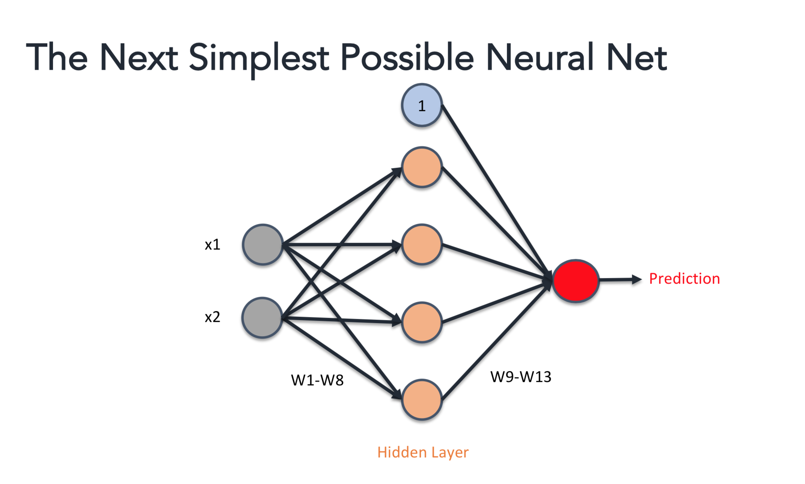
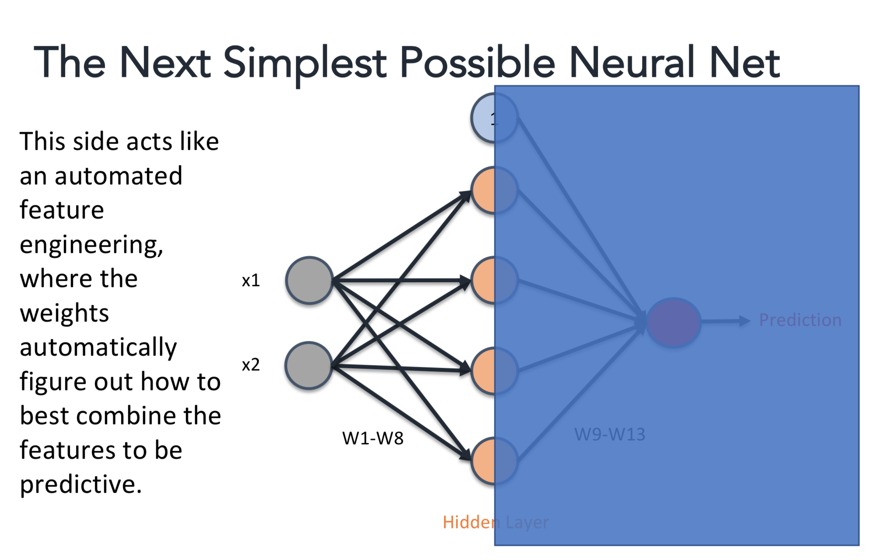
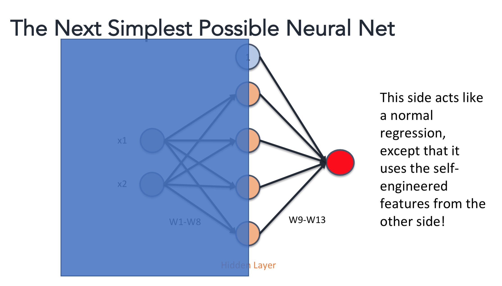
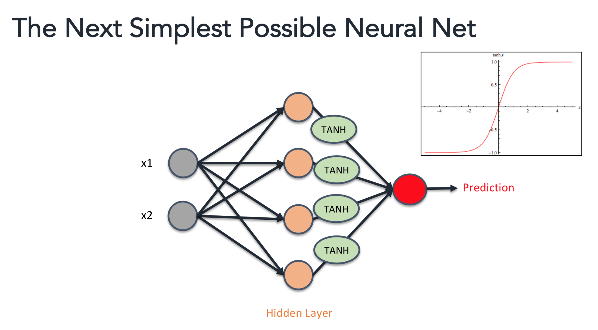
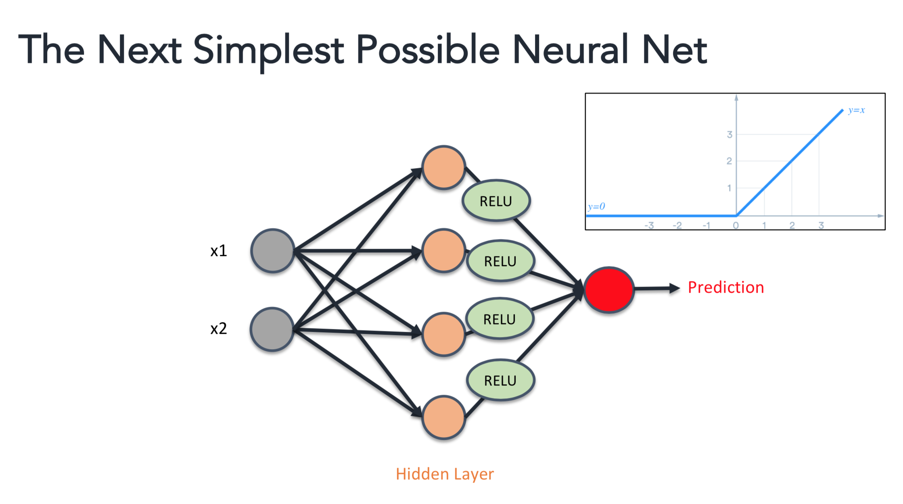

What makes neural networks so special?
Oct. 2, 2018 - General Machine LearningRecently I answered a question on Quora about What is an advantage of a neural network over a linear regression model?. I spent a lot of time crafting the answer, so I wanted to capture that answer in blog form for others to see as well. This is that blog. Enjoy!
One common question is why are data scientists so bent out of shape about how great neural nets (NNs) are. In particular, why should we care about this technique when we have linear regression available to us?
The neural net brings essentially two things to the table on top of regression: Automated Feature Engineering and Non-Linear Features. Let's explore these in more detail.
Automated Feature Engineering
Let's start by looking at a fairly simple neural net (it says "next simplest" because I've taken this image out of a lecture I give at Metis).  We have inputs on the left hand side (x1, x2) and then we have some hidden nodes (orange) and then these combine on the other side to form the prediction. Let’s break down what the “sides of the neural net are doing”. The left hand side is using a set of adjustable weights (W1 - W8) to figure out how to combine inputs x1 and x2 in a the best way to be predictive. This is essentially automated feature engineering. We allow the network to adjust those weights (they’re basically coefficients just like in linear regression), but it does so by learning how to adjust them in a way that makes my prediction the most accurate. Next:  The right hand side is essentially just linear regression. Weights W9 - W13 are just coefficients that treat the hidden layer values as inputs to a regression. So the value at the red output node is:
W9*1 + W10*hidden_node_1 + W11*hidden_node_2 … + W13*hidden_node_4where the 1 is coming from the blue bias term (the y-intercept). So all together, the network learns how to best combine the inputs to make the best possible linear regression.
Non-Linear Features
The other thing neural networks bring to the table is the ability to have non-linearity in our models. Let’s look at introducing an “activation function.”  I can stick a function like Tanh after the hidden layers (or after any node, really) and that means that my combinations of data are no longer just looking at linear combinations of my inputs. My regression can now be squiggly, and adapt to whatever input shape makes things the most predictive. There are lots of activation functions, and all of them do different things. For example, Tanh introduces smooth curves to my regression (it’s a little more complex than that, but let’s just keep it simple for now). Instead of Tanh, I might try the “Rectified Linear Unit” or ReLU that looks like this:  Which would allow for finding hard turning points in my data and adjusting for that (again, over simplifying). It doesn’t really matter what shape I choose, as long as it introduces non-linearity (though in practice, we tend to pick from 5 or so common activations because we need functions with easy derivatives… that’s a discussion for another time).The main thing is, that makes neural nets much more adaptive to weird datashapes than a regular linear regression would be. I could go through and do a ton of work feature engineering and introducing non-linear terms by hand… or I could just hand it to a neural net and say go.
The Downsides to Consider
As the saying goes, there's no free lunch. So what are some of the cons to neural nets?1) Requires a LOT of data because there are a lot of weights to train. In our simple network, we already have 13 weights, when a regular linear regression would take 3.
2) Requires way more computation time than a linear regression to actually learn things.
3) Are prone to overfitting to the data because they can get supper wiggly and mimic the data exactly instead of finding the trends
4) Can be very slow to predict. To predict here, I need to do 8 multiplications, 4 sums, 4 transformations, 5 multiplications, and a final sum. Do predict in linear regression I need to do: 3 multiplications and a sum.
Neural Nets are powerful tools in the toolbox of a data scientist. They just come with some extra responsibility. I think of it like this: if linear regression is a swiss army knife, a neural net is a swiss army laser torch. It has the capability of doing everything the knife does, plus way more. However, it also requires more resources to make it work, time and care to make sure you aren't accidentally setting a building on fire, and more time to make sure it only made the cut you wanted instead of accidentally cutting through everything in it's path. A neural net may be the right tool for the job, but if so, you just have to know you're wielding a powerful tool, and take the appropriate precautions.